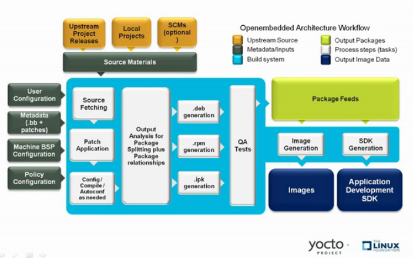
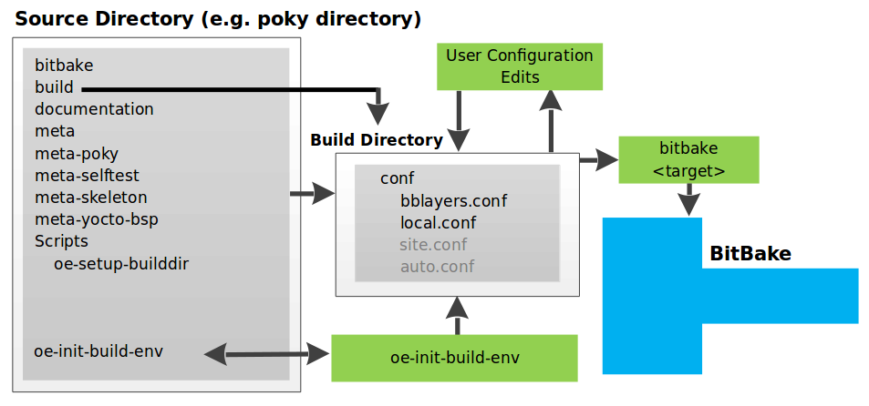
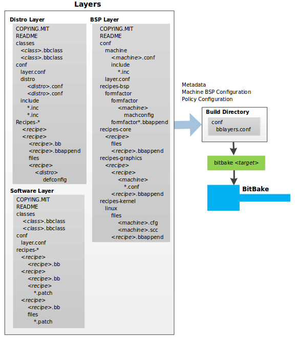
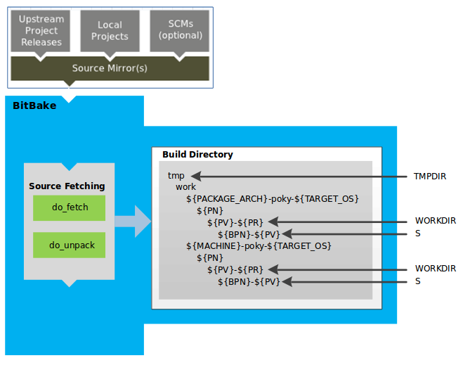
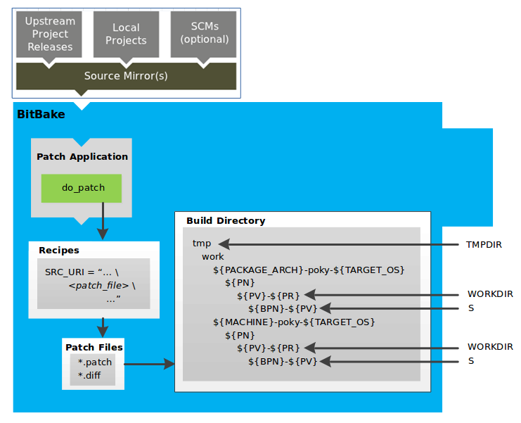
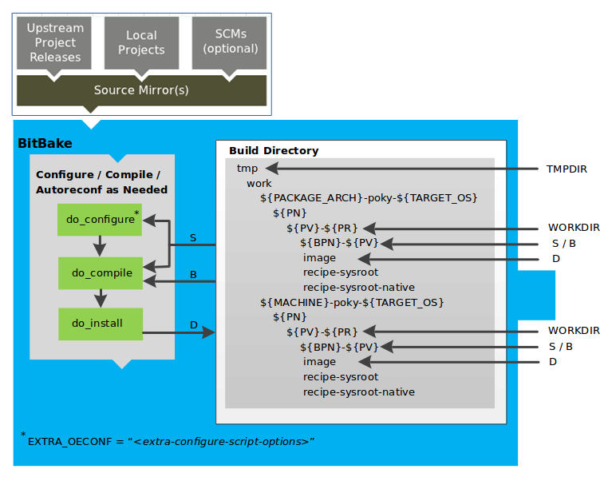
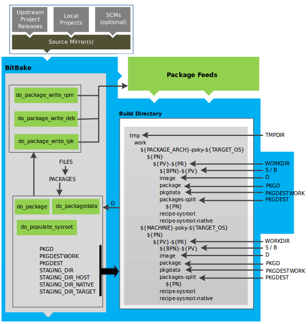
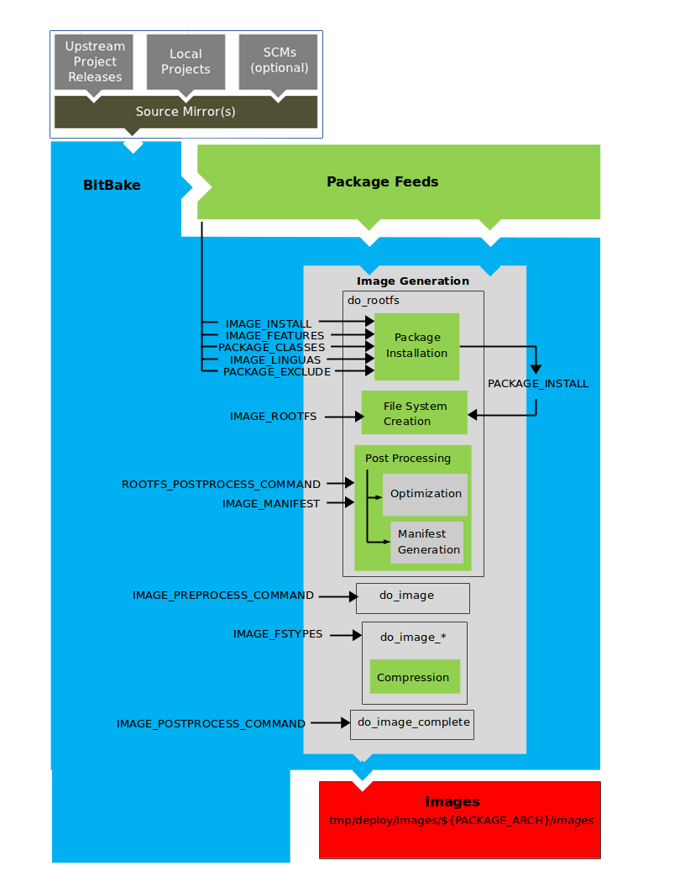
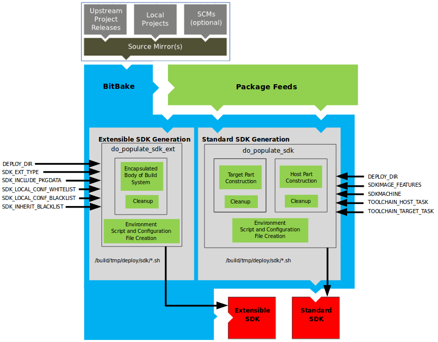

8.7.1. yocto project concepts
yocto 官方参考文档: https://docs.yoctoproject.org/index.html
bitbake 参考文档: https://docs.yoctoproject.org/bitbake/index.html
8.7.1.1. yocto project compoment
8.7.1.1.1. bitbake
bitbake是openembedded build system的核心工具，负责解析元数据，从中生成任务列表，然后执行这些任务
yocto使用bitbake作为解释器来解析各种配置文件，配置文件包含以下三种类型
recipes: 提供特定软件的详细信息 (.bb)
class data: 抽象常见的构建信息(比如如何构建linux内核) (.bbclass)
configuration data: 定义特定的machine设置，决策等 (.conf)
要查看bitbake支持的选项列表，可以使用以下命令
bitbake -h
bitbake --help
bitbake最常见的用法是，bitbake target, 如下所示
bitbake core-image-minimal
8.7.1.1.2. recipes
recipes指后缀为.bb的文件。通常，recipes包含单个软件的信息，包含该软件源，补丁文件，以及如何编译打包的配置。
8.7.1.1.3. class
类文件(.bbclass)包含在recipes之间共享的信息. meta/classes/base.bbclass被所有的recipe喝class文件自动包含，它包含了标准任务的基本定义，例如获取、解压、配置、编译、安装、打包， 有些定义只是框架，内容是空的
8.7.1.1.4. configurations
配置文件(.conf)定义了管理Openenbedded构建过程中的各种配置变量，这些文件分为几个区域，这些区域定义了机器配置选项，编译器配置选项， 一般通用配置选项和用户配置选项。 conf/local.conf
主configuration文件是bitbake.conf，位于meta/conf/bitbake.conf
8.7.1.2. layers
layer是包含相关元数据的集合，这些元数据告诉openembedded构建系统如何构建目标。layer被用来分类不同的任务单元，某些任务单元有共同的特性，可以放在一个layer下，方便模块化组织数据。 例如要制定一套支持特定硬件的系统，可以把与底层相关的单元放在一个layer中，这个layer可以叫做Board support package layer
8.7.1.3. openembedded
下图展示了openembedded的工作流

构建的工作流程由几个功能区组成：
用户配置：可用于构建过程中的元数据
元数据层：提供软件的元数据
源文件：上游版本，本地项目和SCM
构建系统：该模块包含Bitbake如何获取源，应用补丁，完成编译，打包生成image
package feeds: 包含输出包(rpm, deb, ipk)的目录
image: 生成的最终文件
app dev sdk: 交叉开发工具
8.7.1.3.1. 用户配置
用户配置用于定义构建，通过用户配置bitbake可以得到构建镜像文件的目标架构，下载源的存储位置以及其他属性

备注
scripts/oe-setup-builddir脚本使用$TEMPLATECONF变量来确定要定位的配置文件
local.conf文件定义了许多构建环境的基本变量
目标机器选择：由MACHINE变量控制
下载目录: 由DL_DIR变量控制
共享状态目录: 由SSTATE_DIR变量控制
构建输出：由TMPDIR变量控制
分发策略: 由DISTRO变量控制
打包格式: 由PACKAGE_CLASSED变量控制
SDK目标架构: 由SDKMACHINE变量控制
bblayer.conf文件定义bitbake在构建过程中需要对哪些layer进行解析
8.7.1.3.2. 元数据层
一般来说，由三种类型的层输入。
元数据(.bb+补丁): 包含用户提供的配方文件、补丁和附加文件的软件层
bsp: 板级支持包
分发层: 为特定分发构建的镜像提供顶级或通用策略

8.7.1.3.3. bitbake tool
源码获取
构建recipe的第一步是获取和解压源代码

该do_fetch和do_unpack任务获取源文件并将其解压到build目录
备注
对于本地文件(file://)，bitbake将获取文件的校验和，并将校验和插入到do_fetch任务的签名中去。如果有本地文件修改则重新执行do_fetch和所有依赖它的任务
一些相关的特殊变量
TMPDIR: bitbake在构建期间执行所有工作的基本目录，默认是tmp
PACKAGE_ARCH: 构建包的架构:
TARGET_OS: 目标运行的操作系统
PN: recipe的名称
PV: recipe的版本
PR: recipe的修订版本
S: recipe解压路径
打补丁
do_patch任务使用recipt的SRC_URI和FILESPATH变量来定位适用的补丁文件, *.patch或*.diff文件为默认的补丁文件。

配置、编译、打包

构建过程中这一步包括以下任务:
do_prepare_recipe_sysroot: 此任务在${WORKDIR}中设置两个sysroot(recipe-sysroot和recipe-sysroot-native),以便在打包阶段任务所依赖do_populate_sysroot任务的内容
do_configure: 此任务用于源代码编译前的配置
do_compile: 编译源代码，编译发生在B变量指向的目录中，默认情况下B目录与S目录相同
do_install: 安装任务，复制B目录文件到D目录
package splitting

image 生成

image生成过程由几个阶段组成，取决于几个任务和变量。do_rootfs任务用于创建image根文件系统，此任务包含以下几个关键变量
IMAGE_INSTALL: 列出要用package feeds区域安装的基本软件合集
PACKAGE_EXCLUDE: 执行不安装到image中的文件
IMAGE_FEATURES: 指定image feature， 大多数会映射到安装包
PACKAGE_CLASSES: 指定要使用的包后缀(rpm deb ipk)
IMAE_LINGUAS: 确定安装到附加语言支持包的语言
PACKAGE_INSTALL: 传递给包管理器以安装到image中的最终列表
IMAGE_ROOTFS: image路径
do_rootfs之后会执行IMAGE_PREPROCESS_COMMAND变量中定义的命令
构建根文件系统后，do_image_*根据IMAGE_FSTYPES变量中的指定的iamge类型执行任务。
最后一个任务是do_image_complete，此任务会执行IMAGE_POSTPROCESS_COMMAND中定义的函数列表
构建过程完成之后会将image写入tmp/deploy/images/machine/文件夹
kernel-image: 内核二机制文件， KERNEL_IMAGETYPE变量定义了该文件名称
root-filesystem-image: 目标设备的跟文件系统(.ext4或.bz2), IMAGE_FSTYPE定义了image类型
内核模块:
bootloader:
符号链接: 指向最近的构建文件
sdk生成

该部分的任务主要由do_populate_sdk和do_populate_sdk_ext完成.最终生成交叉开发工具链安装脚本(.sh)文件